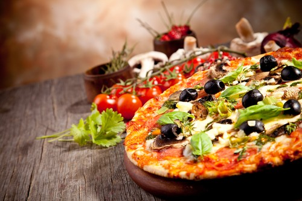

Пицата, превърнала се в една от любимите храни на хората по целия свят, води своя произход от Италия и по-специално от крайбрежния град Неапол. Преди близо 500 години Неапол започва да се разраства, като по-голямата част от населението му се състои от работници в различни индустрии. Въпросните работници са сравнително ниско заплатени и не могат да си позволят придобивките, които притежават средната класа и висшето общество в страната. Поради тази причина те се стараят да пестят от всичко, включително от храната.
Малко история на пицата
Историята на пицата ни връща назад във времето. Сведения сочат, че
подобие на съвременната пицата се е срещало в Древен Египет
, където по улиците продавали равна, кръгла питка, отгоре с различни съставки.
В Древна Елада пък слагали върху кръглия хляб зехтин, домати, маслини и подправки.

Класическата пица обаче тръгва от Италия. Според много историци пицата, такава, каквато ни е позната днес, е родом от Неапол, където била продавана като „печиво за бедните“. Дълго време тя не била смятана за нещо особено в кулинарията и по-скоро играела ролята на всекидневен хляб. Най-често представлявала тънка питка, поръсена със зехтин, домати, сирена и риган.
Сред най-популярните пици, запазили се и до днес, е Маргарита. Кръстена е на Маргарита Савойска – съпругата на краля на обединеното Италианско кралство. Веднъж тя опитала пица с плънка от домати, моцарела и босилек (олицетворяващи трите цвята на Италия). Ястието толкова й допаднало, че кралицата позволила да бъде кръстено на нейно име.
Днес в кулинарията съществуват над 200 вида пици, както солени, така и сладки. Ястието е станало толкова популярно, че всяка национална кухня има своя рецепта с характерни съставки.

Кои са най-важните елементи на качествената и вкусна пица?
Няколко са основните елементи, от които зависи дали една пица ще стане наистина качествена и вкусна.
Сред тях са тестото на пицата, използваните съставки, времето на приготвяне и т.н. В следващите
редове ще научите малко повече за всеки един от елементите на хубавата пица:
Тесто-
Тестото е от голямо значение за цялостния вкус и усещане при консумирането на една пица.
Особено важно е спазването на точното съотношение на продуктите в него, начинът на месене,
дебелината и т.н. В този смисъл всяка надеждна пицария трябва да разполага с отличен майстор за пица,
който може да се справи по най-добрия начин с изпълнението на посочените задачи.
използвани съставки-
съставките, които се използват, създават образа и уникалността на всяка пица.
В днешно време тези съставки стават все по-разнообразни. Колбаси, гъби, сирена, яйца, кисели краставички,
домати, маслини, чушки, сметана и още много неща, които няма как да изброим в един текст. Трябва да се обръща
внимание не само на това кои от въпросните съставки се добавят, но и на техните количества, както и на начина,
по който се комбинират. Крайната цел е на клиента да бъде предоставена вкусна, добре изглеждаща и ароматна пица,
която да задоволи всички негови сетива.
време на приготвяне-
за да се усети пълноценно насладата от хубавата пица, тази пица трябва да
бъде приготвена непосредствено преди самото консумиране. Съветваме ви да избягвате
заведения за хранене, в които често се случва да сервират на клиентите студени и изсъхнали пици.
Залагайте на пицарии, където можете да видите пещта и да усетите аромата на пицата, докато тя се приготвя.
обстановка и атмосфера-
обстановката и атмосферата, в които ще похапвате, са важни при консумирането не само на пица,
но и на каквато и да било друга храна. Те могат както да увеличат насладата от вашия обяд или вечеря,
така и да оставят доста неприятен вкус в устата ви. Задължително огледайте добре интериора и обстановката в
съответната пицария и се старайте да съобразите максимално избора си на маса със своите лични вкусове, предпочитания
и разбирания за перфектната среда за хранене.
Защо да похапнете пица в пицария Милеви?
Милеви е пицария, разположена на удобна локация в центъра на Враца. Тя предоставя на своите клиенти както вкусна
пица, така и най-доброто от италианската кухня и стил. Ето няколко причини да похапнете пица именно при нас:
Разнообразни видове пица–
пицария Милеви можете да избирате измежду множество разнообразни
видове пица – „Маргарита“, „Неаполитана“, „Вегетариана“, „Капричоза“, „Селска“, „Калцоне“, „Тоскана“ и др.
В допълнение, са налични и пица сандвичи от типа на чийзбургерите, както и сандвичите с пилешко филе или риба тон.
Други ястия-
към пицата можете да си поръчате най-различни салати и предястия,
като например пресни пържени картофи и хрупкави пилешки филенца.
В менюто си също така предлагаме богата гама от други ястия, способни да отговорят на
вкуса и предпочитанията на всеки един клиент.
Перфектен интериор и обстановка-
интериорът на пицария Милеви е направен в типичен италиански стил, предоставяйки максимални дози уют
и комфорт за всички гости. Имате възможност да избирате измежду 120 места на закрито (включително по-уединени
маси за романтична обстановка) и 60 места на красива тераса с изглед към църквата „Свети Седмочисленици
Специални предложения– в пицария Милеви можете да се възползвате от редица специални предложения.
При поръчка на повече от три пици (или три пици в комбинация с друга храна) ще получите 15%
отстъпка върху цялата сметка. А ако вашата поръчка надхвърля 25 лв, имате право и на безплатна
бутилка Кока-Кола 1.250 мл., която ще върви отлично като напитка за вашата пица.
Елате в пицария Милеви и се насладете на вкусна и хрупкава пица, сервирана в изящна обстановка и релаксираща атмосфера!